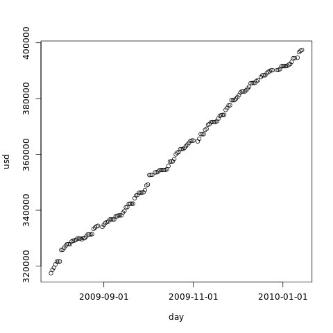

Hard drive occupation prediction with R
On some environments, disk space usage can be pretty predictable. In this post, we will see how to do a linear regression to estimate when free space will reach zero, and how to assess the quality of such regression, all using R - the statistical software environment.
Prerequisites
The first thing we need is the data. By running a simple
(date --utc; df -k; echo) >> /var/dflog.txt
everyday at 00:00 by cron, we will have more than enough, as that will store the
date along with total, free and used space for all mounted devices.
On the other hand, that is not really easy to parse in R, unless we learn more about the language. In order to keep this post short, we invite the reader to use his favorite scripting language (or python) to process that into a file with the day in the first column and the occupied space in the second, and a row for each day:
YYYY-MM-DD free space YYYY-MM-DD free space (...)
This format can be read and parsed in R with a single command.
This is the data file we will use as source for the results provided in this article. Feel free to download it and repeat the process. All number in the file are in MB units, and we assume an HD of 500GB. We will call the date the free space reaches 0 as the df0.
Starting up
After running R in the shell prompt, we get the usual license and basic help information.
The first step is to import the data:
> duinfo <- read.table('duinfo.dat', colClasses=c("Date","numeric"), col.names=c("day","usd"))
> attach(duinfo)
> totalspace <- 500000
The variable duinfo is now a list with two columns: day and usd. The
attach command allows us to use the column names directly. The
totalspace variable is there just for clarity in the code.
We can check the data graphically by issuing:
> plot(usd ~ day, xaxt='n') > axis.Date(1, day, format='%F')
That gives us an idea on how predictable the usage of our hard drive is.
From our example, we get:

Linear model
We can now create and take a look at our linear model object:
> model <- lm(usd ~ day) > model
Call: lm(formula = usd ~ day) Coefficients: (Intercept) day -6424661.2 466.7
The second coefficient in the example tells us that we are consuming about 559 MB of disk space per day.
We can also plot the linear model over our data:
> abline(model)
The example plot, with the line:
Evaluating the model
R provides us with a very generic command that generates statistical information about objects: summary. Let's use it on our linear model objects:
> summary(model)
Call:
lm(formula = usd ~ day)
Residuals:
Min 1Q Median 3Q Max
-3612.1 -1412.8 300.7 1278.9 3301.0
Coefficients:
Estimate Std. Error t value Pr(>|t|)
(Intercept) -6.425e+06 3.904e+04 -164.6 <2e-16 ***
day 4.667e+02 2.686e+00 173.7 <2e-16 ***
---
Signif. codes: 0 ‘***’ 0.001 ‘**’ 0.01 ‘*’ 0.05 ‘.’ 0.1 ‘ ’ 1
Residual standard error: 1697 on 161 degrees of freedom
Multiple R-squared: 0.9947, Adjusted R-squared: 0.9947
F-statistic: 3.019e+04 on 1 and 161 DF, p-value: < 2.2e-16
To check the quality of a linear regression, we focus on the residuals, as they represent the error of our model. We calculate them by subtracting the expected value (from the model) from the sampled value, for every sample.
Let's see what each piece of information above means: the first is the five-number summary of the residuals. That tells us the maximum and minimum error, and that 75% of the errors are between -1.4 GB and 1.3 GB. We then get the results of a Student's t-test of the model coefficients against the data. The last column tells us roughly how probable seeing the given residuals is, assuming that the disk space does not depend on the date - it's the p-value. We usually accept an hypothesis when the p-value is less than 5%; in this example, we have a large margin for both coefficients. The last three lines of the summary give us more measures of fit: the r-squared values - the closest to 1, the better; and the general p-value from the f-statistics, less than 5% again.
In order to show how bad a linear model can be, the summary bellow was generated by using 50GB as the disk space and adding a random value between -1GB and 1GB each day:
Call:
lm(formula = drand$usd ~ drand$day)
Residuals:
Min 1Q Median 3Q Max
-1012.97 -442.62 -96.19 532.27 1025.01
Coefficients:
Estimate Std. Error t value Pr(>|t|)
(Intercept) 17977.185 33351.017 0.539 0.591
drand$day 2.228 2.323 0.959 0.340
Residual standard error: 589.7 on 84 degrees of freedom
Multiple R-squared: 0.01083, Adjusted R-squared: -0.0009487
F-statistic: 0.9194 on 1 and 84 DF, p-value: 0.3404
It's easy to notice that, even though the five-number summary is narrower, the p-values are greater than 5%, and the r-squared values are very far from 1. That happened because the residuals are not normally distributed.
Now that we are (hopefully) convinced that our linear model fits our data well, we can use it to predict hard-disk shortage.
Predicting disk-free-zero
Until now, we represented disk space as a function of time, creating a model that allows us to predict the used disk space given the date. But what we really want now is to predict the date our disk will be full. In order to do that, we have to invert the model. Fortunately, all statistical properties (t-tests, f-statistics) hold in the inverted model.
> model2 <- lm(day ~ usd)
We now use the predict function to extrapolate the model.
> predict(model2, data.frame(usd = totalspace))
1
14837.44
But... when is that? Well, that is the numeric representation of a day in R: the number of days since 1970-01-01. To get the human-readable day, we use:
> as.Date(predict(model2, data.frame(usd = totalspace)), origin="1970-01-01")
1
"2010-08-16"
There we are: df0 will be at the above date if the current pattern holds until then.
Conclusion
The linear model can give us the predicted hard disk space usage at any future date, as long as collected data pattern is linear. If the data we collected has a break point - some disk cleanup or software installation - the model will not give good results. We will usually see that in the analysis, but we should also always look at the graph.
This article is focused on teaching R basics - data input and plotting. We skip most of the formalities of science here, and linear regression is certainly not a proper df0 prediction method in the general case.
On the other hand, in the next part of this article we will see a more robust method for df0 prediction. We will also sacrifice our ability to see the used space vs time to get a statistical distribution for the date of exhaustion, which is a lot more useful in general.
Further reading
- http://www.cyclismo.org/tutorial/R/index.html: R tutorial
- http://www.r-tutor.com/: An R introduction to statistics
- https://www.datacamp.com/courses/free-introduction-to-r: Datacamp's Introduction to R course
- http://cran.r-project.org/doc/contrib/Lemon-kickstart/index.html: Kickstarting R
- http://data.princeton.edu/R/linearModels.html: "Linear models" page of Introduction to R.
- http://www.r-bloggers.com/: daily news and tutorials about R, very good to learn the language and see what people are doing with it.